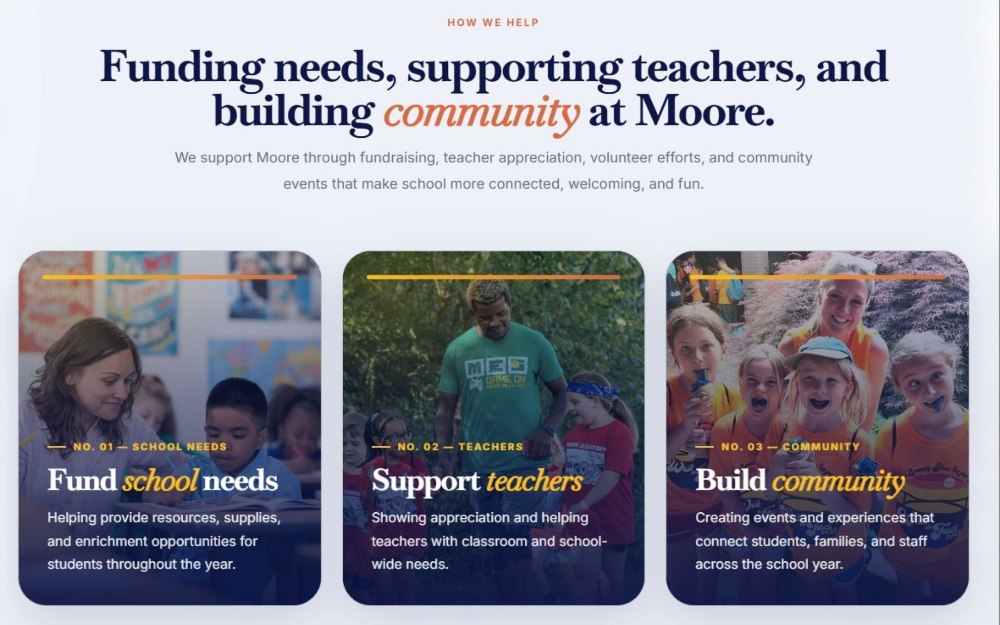
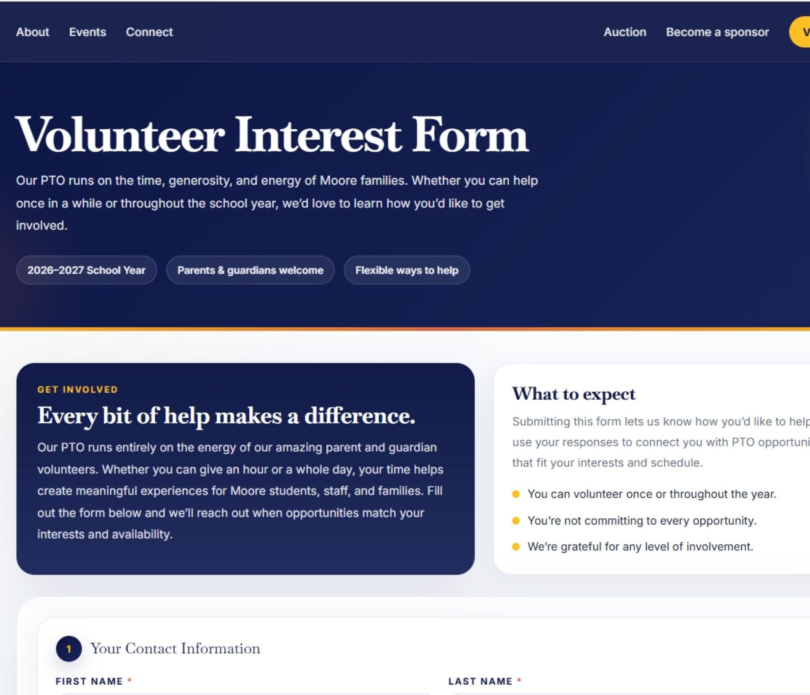

Donor-facing infrastructure turns goodwill into action.
Donor-facing digital infrastructure is the system of pages, forms, calls to action, proof points, and follow-up pathways that help supporters move from interest to participation.
For nonprofits, PTOs, schools, ministries, community groups, and mission-driven organizations, the website is often the first place people go when they want to help. But “help” can mean several different things. Someone may want to give money, sponsor a campaign, volunteer one afternoon, donate an auction item, share the organization with a friend, or simply understand what is happening next.
A strong nonprofit website gives each of those people a clear path, which is why it should be reviewed through a brand systems audit lens before redesigning. It does not make supporters search through newsletters, social posts, PDFs, or email threads to figure out what to do. It turns community interest into organized action.
Simple definition: donor-facing digital infrastructure is the public-facing system that makes it easy for supporters to give, sponsor, volunteer, donate items, share the mission, and stay connected.
Why nonprofits lose support online.
Most nonprofits are not short on heart. They are short on clarity, capacity, and repeatable systems. When the website does not clearly explain what is needed, where the money goes, or how someone can participate, supporters hesitate or drift away.
That does not mean they are unwilling to help. It means the path to helping is too hard to follow. A donor may be ready to give but cannot find the donation link. A local business may be open to sponsorship but cannot compare sponsorship levels. A parent may be happy to volunteer but does not know whether filling out a form commits them to every event. A donor may want to submit an auction item but has no organized place to provide item details, logo files, restrictions, pickup notes, or estimated value.
Digital infrastructure removes those small points of friction. It makes support feel simple, credible, and well-managed.

The core components of nonprofit digital infrastructure.
The strongest nonprofit websites are not built around one generic “donate” button. They are built around the real ways people support the organization.
Mission clarity
A concise explanation of who the organization serves, what it funds, and why support matters now.
Giving pathway
A simple way to donate or contribute, supported by clear language around impact and use of funds.
Sponsorship system
A dedicated page that explains sponsorship value, levels, recognition, deadlines, and next steps.
Volunteer intake
A form that captures interests, availability, contact details, and follow-up preferences without overcommitting the supporter.
Donation intake
A structured submission flow for auction items, in-kind gifts, services, experiences, gift cards, and business contributions.
Community communication
Clear updates, social links, share tools, calendars, and resource hubs that help supporters stay connected.


Example: Moore Elementary PTO’s donor-facing system.
Moore Elementary PTO is a useful example because the website is not only a digital brochure. It is an operating layer for fundraising, volunteering, sponsorships, auction submissions, community updates, and PTO leadership resources.
The homepage quickly explains the mission: supporting Moore students, teachers, and families through fundraising, volunteer efforts, and community-building throughout the school year. It also separates support into clear action paths, including volunteering, sponsorship, giving, sharing, and PTO resources.
It makes community support specific
Rather than asking for vague participation, the site explains how the PTO helps: funding school needs, supporting teachers, and building community. Those categories translate the mission into concrete areas of impact.
It gives sponsors a complete decision path
The sponsorship page explains the campaign, the fundraising goal, what the money supports, why visibility matters, how the sponsorship tiers work, and how to complete the process. A local business does not have to email first just to understand the opportunity.

It turns auction donations into structured data
The auction page asks for donor information, item details, category, estimated value, restrictions, image or logo upload, and delivery method. That matters because the public form is also an internal operations tool. It helps the team track, package, promote, and follow up on donated items.

It lowers the pressure around volunteering
The volunteer page clarifies that submitting interest does not mean committing to every opportunity. It captures contact details, child information, interest areas, availability, and preferred communication so PTO leaders can match people with the right opportunities.

The lesson: nonprofit infrastructure should reduce the number of private messages, one-off emails, missing details, and repeated explanations required to move support forward.
How to build donor-facing infrastructure.
Start by identifying the main actions your organization needs people to take. Then build a dedicated pathway for each one, instead of forcing every supporter through the same generic contact form.
1. Map your support pathways
List every meaningful way someone can help: donate, sponsor, volunteer, submit an item, attend an event, share the organization, join a committee, or follow updates. Each pathway should have a clear page, section, or form.
2. Explain impact before asking for action
People are more likely to help when they understand what their support makes possible. Tie giving and sponsorship language to programs, supplies, student experiences, teacher support, community events, or mission outcomes.
3. Build forms around operational needs
A form should not only collect a name and email. It should collect the details your team needs to act without chasing information later. For auction items, that might include value, restrictions, quantity, image upload, and delivery method. For volunteers, it might include availability, interest areas, and preferred contact method.
4. Create supporter confidence
Use clear process language. Tell sponsors what happens after they submit. Tell volunteers how they will be contacted. Tell donors what information is needed. The more predictable the process feels, the easier it is for people to participate.
5. Make sharing part of the system
Supporters often know other people who would help. Add share prompts, copyable links, QR codes, sponsor decks, and social pathways so your community can spread the word without needing custom instructions.
6. Give leadership a back-end view
Donor-facing infrastructure should also support the internal team. A public form is only useful if submissions are organized somewhere leadership can review, sort, follow up, and act on them.

What to read next.
This page is part of the Brand Infrastructure topic cluster. These supporting guides expand on the systems that help mission-driven organizations move from scattered communication to repeatable support pathways.
Need your nonprofit site to do more than explain the mission?
Caro Creative helps nonprofits, PTOs, schools, and mission-driven teams build digital infrastructure for giving, sponsorships, volunteer recruitment, campaign communication, and community follow-through.
Request a System Audit